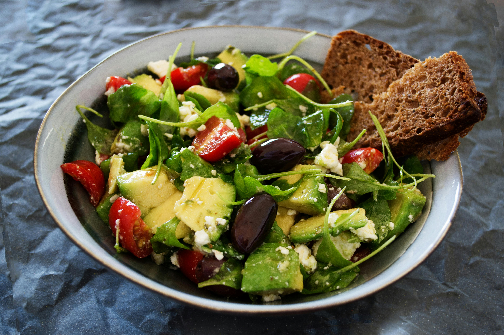
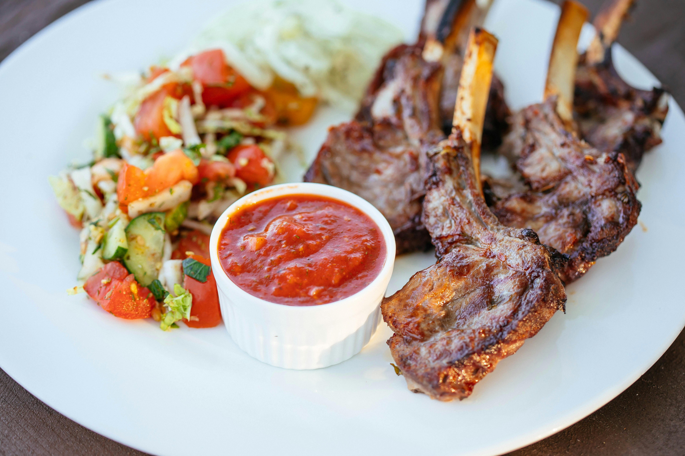

Entrée
Salade de saison, vinaigrette maison
Allergènes : moutarde
Thème : Pâques • Régime : Classique
Option végétarienne disponible sur demande
Minimum : 6 personnes
Prix minimum : 180 €
Stock restant : 5


Un menu festif spécialement préparé pour célébrer Pâques. Des plats savoureux préparés avec des produits frais et adaptés pour un repas convivial en famille ou entre amis.
Salade de saison, vinaigrette maison
Allergènes : moutarde
Agneau confit accompagné de légumes rôtis
Allergènes : aucun
Moelleux chocolat et crème légère
Allergènes : œufs, lait
Si vous n'êtes pas connecté, vous devrez vous connecter ou créer un compte.